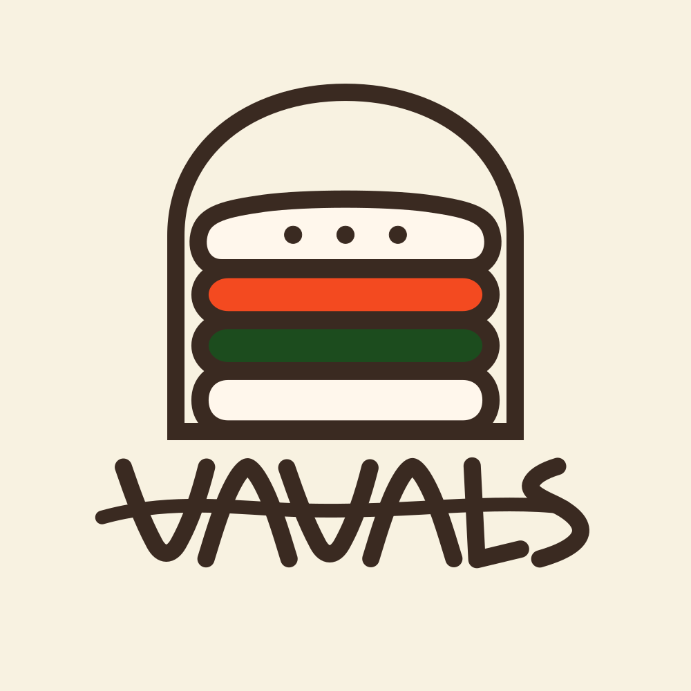

KOREAN RICE BURGER
Burgery fusion koreańsko-japońskie.
Korean & Japanese Fusion Burgers
NA WYNOS TAKEAWAY
JUŻ WKRÓTCE OPENING SOON
Wrocław Grunwaldzki

KOREAN RICE BURGER
Burgery fusion koreańsko-japońskie.
Korean & Japanese Fusion Burgers
NA WYNOS • TAKEAWAY
JUŻ WKRÓTCE • OPENING SOON
Wrocław • Grunwaldzki